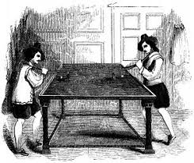

History of Billiards

Billiards, often referred to as cue sports, has a rich history that dates back to the 15th century in Europe. Originating as an outdoor lawn game similar to croquet, it gradually moved indoors and evolved into the table game we recognize today. By the 1600s, billiards had become a popular pastime among nobility and was especially favored in France, where King Louis XI was known to have a billiard table. The game was played with wooden cues and balls, and the tables featured simple boundaries and pockets.
As the centuries progressed, billiards developed into various forms, including carom, pool, and snooker. Technological advances like the invention of the leather cue tip in the early 19th century improved control and technique, while the introduction of slate beds and rubber cushions made tables more durable and consistent. Today, billiards remains a global sport and social activity, with professional tournaments, competitive leagues, and recreational games played in countless clubs and homes around the world.